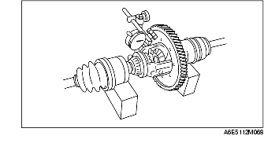

PRÉ-INSPECTION DU DIFFÉRENTIEL
B3E051527100101
Inspection de jeu d'entredent
1. Mesurer le jeu d'entredent en suivant la procédure suivante.
-
(1) Reposer les arbres de transmission gauche et droit dans le composant de différentiel.
-
(2) Soutenir l'arbre de transmission sur des blocs en V, comme indiqué dans l'illustration.
-
(3) Mesurer le jeu d'entredent des deux engrenages à pignons.

-
• Si la valeur mesurée se situe en dehors de la plage de valeurs spécifiées, ajuster en sélectionnant et en montant des rondelles de poussée entre le carter et les pignons latéraux.
-
Jeu d'entredent
-
0-0,1 mm {0-0,004 in}
-
Attention
-
• Utiliser des rondelles de poussée de la même épaisseur de chaque côté.
Epaisseur de rondelle de poussée
mm {in}
|
2,0 {0,079}
|
2,1 {0,083}
|
2,2 {0,087}
|
-
• Si la valeur mesurée dépasse la valeur maximum spécifiée, même après l'utilisation d'une rondelle de poussée de 2,2 mm {0,087 in} d'épaisseur, remplacer le composant de différentiel.